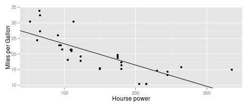

- you know, how many horsepower you want in your car
- we can predict, how many miles per gallon such a car will have.
- to do that, we built a mathematical model and trained it on a real dataset
require(datasets)
head(mtcars)
## mpg cyl disp hp drat wt qsec vs am gear carb
## Mazda RX4 21.0 6 160 110 3.90 2.620 16.46 0 1 4 4
## Mazda RX4 Wag 21.0 6 160 110 3.90 2.875 17.02 0 1 4 4
## Datsun 710 22.8 4 108 93 3.85 2.320 18.61 1 1 4 1
## Hornet 4 Drive 21.4 6 258 110 3.08 3.215 19.44 1 0 3 1
## Hornet Sportabout 18.7 8 360 175 3.15 3.440 17.02 0 0 3 2
## Valiant 18.1 6 225 105 2.76 3.460 20.22 1 0 3 1
fit<-lm(formula = mpg~hp, data = mtcars)
fit
##
## Call:
## lm(formula = mpg ~ hp, data = mtcars)
##
## Coefficients:
## (Intercept) hp
## 30.09886 -0.06823
require(ggplot2)
qplot(hp, mpg, data = mtcars)+ xlab("Hourse power")+ylab("Miles per Gallon") +
geom_abline(intercept = coef(fit)[1], slope=coef(fit)[2])
